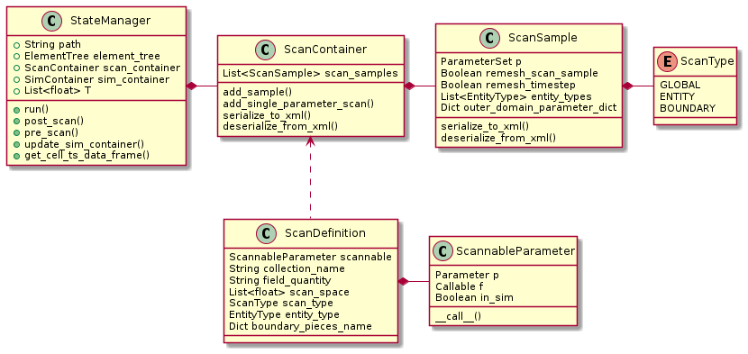

StateManager¶
The main use of StateManager is to run parameter scans in an organised manner and produces the xml
files necessary for the use of PostProcessor.
When SimContainer is used in conjunction with StateManger to run parameter scans and produce xml output for post processing,
the simulation loop is invoke from with StateManger.run()
(Listing 2 and Fig. 5).
![@startuml
partition run.py {
:scenario = setup();
:state_manager = StateManager()
state_manager.scenario = scenario
state_manager.T = [0,1];
partition StateManager.run() {
while (model_index in model_indicies)
while (scan_index scan_samples)
:self.sim_container =self.scenario.get_sim_container();
:self.sim_container.initialize();
:self.update_sim_container();
:self.sim_container.run();
:self.scan_tree.write_element_tree();
endwhile
endwhile
}
}
end
@enduml](../../../_images/plantuml-c4d2ec282d1c0ccfbc109e9cd308f884e4f312fe.png)
Fig. 5 Activity diagramm depicting the scan loop.¶
1 2 3 4 5 6 7 8 9 10 11 12 13 14 15 16 | def run(self, ext_cache = "", model_names = None, number_of_replicats=1):
for model_index in model_indicies:
for scan_index in range(n_samples):
self.sim_container = self.scenario.get_sim_container(
self.get_scan_sample(scan_index).p,
model_index=model_index
)
self.sim_container.top_path = self.path
self.sim_container.initialize()
self.update_sim_container(self.sim_container, scan_index, model_index)
self.pre_scan(self, scan_index)
self.sim_container.run(T, number_of_replicats=number_of_replicats)
self.post_scan(self, scan_index)
self.scan_tree.write_element_tree()
self.save_records()
|
For each combination of model and scan_sample the SimContainer.run() method is invoked once with the following steps
(Lines 5-8) construct
SimContainerinstance from scenario(Line 9) Set file paths
(Line 10) Initialize
SimContainerinstance(Line 11) update
SimContainerinstance withScanSampleinstance(Line 12) run pre_scan hook
(Line 13) call
SimContainer.run()(Line 14) run post_scan hook
(Line 15) write xml output
(Line 16) Save timing records
The call to step-methods propagates until it reaches the MySolver.step() and InternalSolver.step() methods respectively.
The actual solver for GlobalProblems is implemented in the subclasses of MySolver and the solver for Entity behavior in
subclasses of InternalSolver.
Parameter scan setup¶

Fig. 6 The ScanContainer class holds a list of ScanSample, each representing a
single point in the parameter scan. ScanSamples objects are self contained
and can be applied to SimContainer, to change all (or just some)
simulation parameters.
ScanDefinition instances can be passed to ScanContainer as a more convenient
way of adding scan points.¶
A parameter scan is produced by adding ScanSample instances to ScanContainer
and then handing the ScanContainer instance to StateManager.
This can be accomplished by either manually instantiating and population ScanSample,
or through the use of ScanDefinition and ScanContainer.add_single_parameter_scan().
ScanContainer to setup a parameters scan over the
Diffusion constant with logarithmically spaced samples ranging
from parameter fold change 0.1 to 10.¶template_D = pool.get_template("D")
D = ScannableParameter(template_D(10), lambda x, v: x * v)
scan_space = np.logspace(-1,1,10)
D_def = ScanDefintion(D, "IL-2", scan_space, ScanType.GLOBAL, field_quantity="il2")
scan_container.add_single_parameter_scan([D_def], scan_name="D")
stMan.scan_container = scan_container
Instantiating ScanSamples needs more code, but is more flexible.